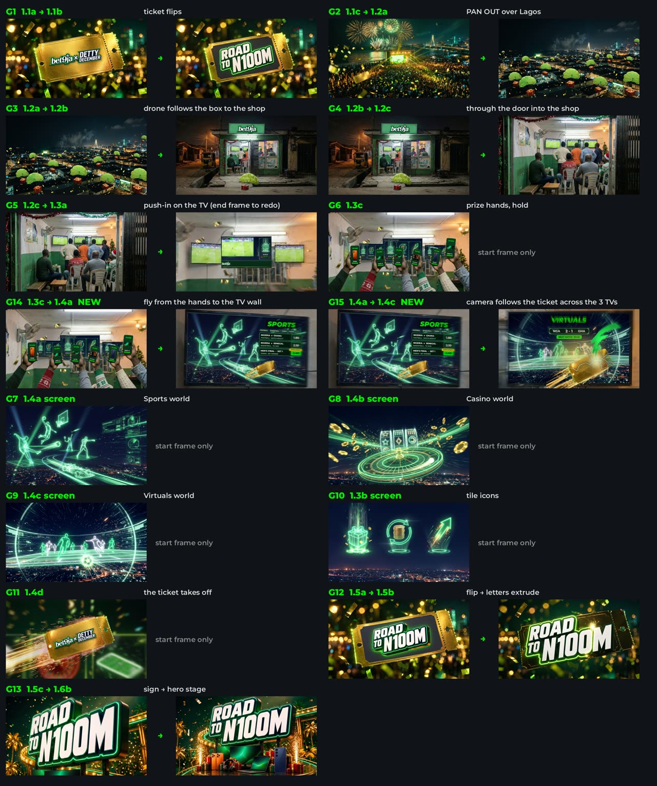
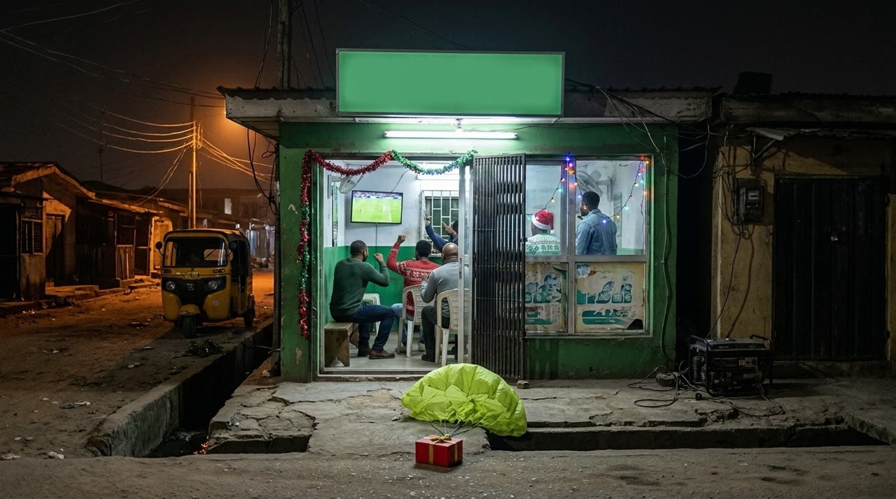
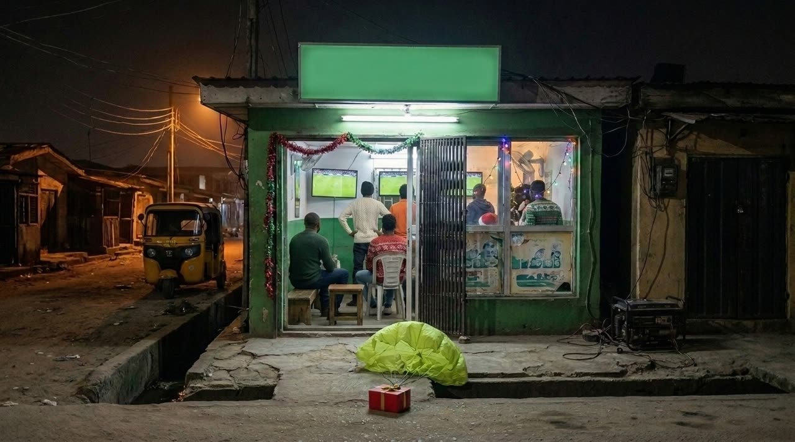
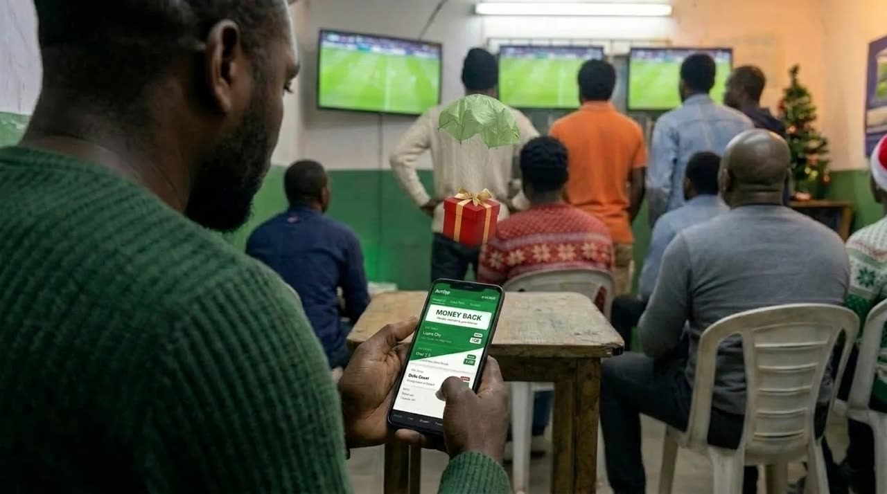
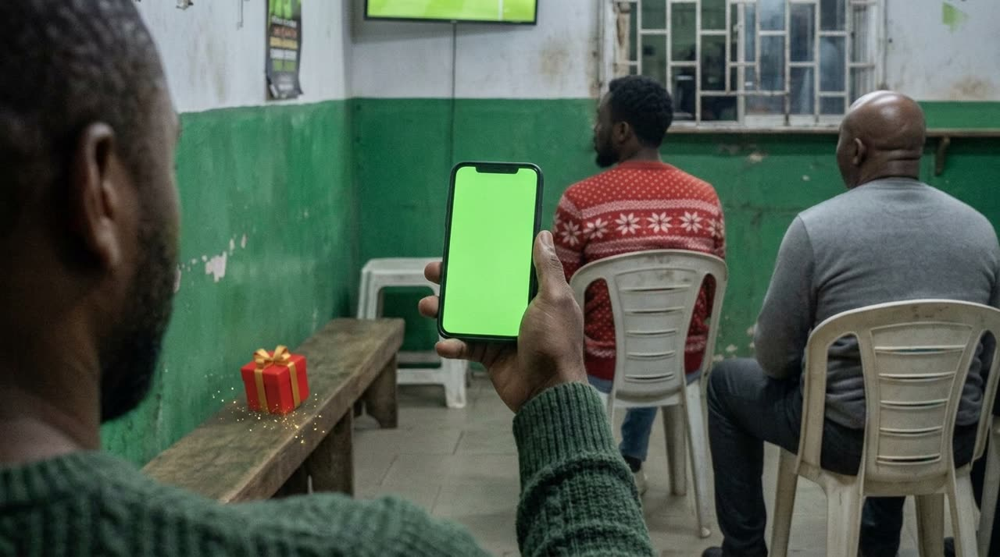

Alexandru-Adrian StanciuVideo Content Specialist · Marketing · Bet9ja · Since 12 Jan 2026
2026 · Ten-month review · For Marvin Cushieri
Ten months.One video department.
Since January I have been Logifuture's only in-house video resource for Bet9ja: broadcast TVCs, daily short-form, templates and an AI production pipeline. This page shows what that one seat has delivered, where it is on its objectives, and what it would take to scale it.
1
in-house video resource for the brand
5
TVCs in 2026: 3 on air, 2 in production
138
broadcast, DOOH & social deliverables from 3 TVC masters
59M+
YouTube views on two TVCs, before TV & social
00Showreel 2026
The yearin motion.
REC · Alex Stanciu · Reel 2026
00:00:00:00
Headphones recommended
1:01 · Updated 9 Nov · November from 0:25: Detty December, Legends XI, Osimhen, matchday templates, EPL adaptation
ONE SEAT.EVERY FORMAT.
TVC · DOOH · Social · Templates · AI — one person, 2026
01Personal objectives 2026
Delivered.Here's the proof.
These are my three 2026 objectives as set in Personio, each weighted at one third. All three are essentially delivered, with seven weeks of the year still to go. Each is backed by work already published.
Source · Personio · Alex Stanciu, Personal Objectives 2026
KPI 01 · 33%Delivered
50+ short-form videos
Target: at least 50 short-form videos across betting, engagement and product, totalling 150M impressions.
Daily short-form output across IG, X, TikTok, Facebook and YouTube Shorts since Month 1
Formats: match previews, AI-oracle predictions, live draws, fight promos, vertical TVC cuts
Counted separately: the World Cup TVC alone produced 53 campaign deliverables (cutdowns, DOOH, social versions)
Impressions report: being consolidated with the Social team for the year-end review
Evidence ↓ vertical work below
KPI 02 · 33%Delivered
10 video templates
Target: at least 10 reusable templates for short-form video content.
Matchday preview system in weekly use: UCL, LaLiga, Premier League, each league with its own sound
Formats: preview, Best Bet, 5 Reasons, player cards & odds, Baba Predict
Fixed elements pre-rendered, so only match data changes and turnaround drops to hours
Evidence ↓ preview templates below
KPI 03 · 33%Delivered
Branded AI social profile
Target: a branded AI social profile used daily across social ahead of WC26.
Baba Predict, Bet9ja's AI football oracle, launched with an origin story
Launch confirmed in the 12-week check-in (April 2026), ahead of World Cup 2026
Running weekly across UCL, Premier League and LaLiga fixtures
Evidence ↓ Baba Predict below
01 / 2828 short-form videos · scroll →
Baba Predict & templates · since launch
The Oracle — Origin Story
Baba Predict · Launch
Barça v Atlético
Baba Predict · UCL
Bayern v Real Madrid
Baba Predict · UCL QF
Man City v Arsenal
Baba Predict · PL
Matchday — PSG v Barça
Template · UCL
Matchday — Bayern v Arsenal
Template · UCL
Matchday — El Clásico
Template · LaLiga
5 Reasons — Man Utd v Arsenal
Template · PL
Our Best Bet — Real v Benfica
Template · UCL
QF Night — Barça v Atlético
Player cards & odds
The ₦50M Goal — Live Draw
WC26 campaign
Itauma vs Franklin
Boxing · Fight promo
Home of World Cup 2026
WC26 · Vertical cut
New since October · short-form & templates
Nigeria Legends XI v Africa Legends XI
TikTok live · 8 Nov
Osimhen — From Lagos
UCL · 17 goals
Man Utd to be relegated?
PL · data story
We're So Back — EPL
TVC adaptation · 9:16
Derby — Milan v Inter
Template · Serie A
Liverpool v Arsenal
Template · PL
Chelsea v Man Utd
Template · PL
Atlético v Bayern
Template · UCL
World Cup, boxing, podcast & editorial · across 2026
Belgium — team & stats
WC26 · Flags series
World Cup Zoom — walkthrough
WC26 · Product demo
Chaos in the Ring — Live
Boxing · TikTok livestream
Home Turf — podcast short
Podcast · 9:16 cutdown
Mourinho vs Barcelona
Editorial · 65s
Man City — Good Luck
AI short · non-league
We're So Back — TikTok
CT-2593 · Register Now
02Beyond the brief
None of this isin my objectives.
My objectives cover short-form. On top of them I produced the brand's broadcast TVCs: two of them alone have passed 59M views on YouTube, on top of national TV, DOOH and social. The World Cup film ran on national TV and social, and this work feeds the department's Share-of-Voice key result (Marketing OKR 2 · KR2).
01 / 07Scroll →
On air · TV + social
We Are The Home of World Cup 2026
Hero TVC · 30s · 21M YouTube views · national TV · one master, 55 deliverables
On air
We're So Back
New Season TVC · 30s · 38M YouTube views · national TV · 13 versions until the overhead kick landed on the beat
On air · TV + DOOH + social
We're So Back — EPL Adaptation
Adaptation · 30s + 12s · 75 deliverables · 29 DOOH screens in Lagos, Ibadan & Port Harcourt
Product film
World Cup Zoom
Product launch · 32s · “a new result every few minutes”, plus a 9:16 phone walkthrough
Product film
Simulate WC26
Product launch · 27s · simulate the whole tournament in seconds
Produced · delivering Nov
Now & Forever — Nothing Faster
Always-on TVC · 30s · storyboards and company presentation for three script routes; Route 01 produced
Launch
Do You Want To Boom?
BetBoom launch · 1:1 · product launch film for social
Case study · World Cup 2026
One master. 55 deliverables.
From a single hero film, one editor delivered every format the campaign needed: 4K broadcast, DOOH billboards, social and cutdowns. An agency normally staffs this with a team.
Counted from the delivery folders · versions & drafts excluded
TVC
Broadcast
DOOH & screens
Social & cutdowns
Total
Reach
Home of World Cup 2026Hero · 30s
8
38
9
55
21M YouTube
We're So BackNew season · 30s
5
—
3
8
38M YouTube
We're So Back — EPLAdaptation · 30s + 12s
11
58
6
75
29 DOOH sites
Now & ForeverAlways-on · 30s
Route 01 “Nothing Faster” in production · delivery end of November
—
In production
Detty DecemberRoad to ₦100M · 30s
Draft v25 in review · ARCON 23 Nov · on air 1 Dec
—
In production
5 TVCs
24
96
18
138
59M+ YouTube
YouTube: public view counters on @Bet9jaYoutube, 9 Nov 2026. National TV airings come on top and are not counted here.
03On the desk right now · November
Two TVCsby month end.
This is November, all from the same seat and alongside daily social: two broadcast deliveries and a new campaign proposition.
Delivery · end of November
Now & Forever
Always-on 30s TVC. After client feedback all three storyboards were rebuilt: fewer AI people, more product, retail shown as present.
OCTRoute 01 “Nothing Faster” approved and produced
NOVFinal delivery
Draft v25
Live · 1 December
Road to ₦100M
Bet9ja × Detty December 30s TVC, from storyboard to AI video generation, with the design team's product creatives cut in.
09 NOVFirst draft · 48h feedback
23 NOVSubmitted to ARCON for clearance
01 DECOn air
CL DOOMSDAY
Proposition · 11 November
Champions League Doomsday
Three video routes for the final league-phase matchday (27 Jan 2027), for the planning meeting.
11 NOVProposition meeting
27 JANMatchday
04How one person does this
Raw AI in.Broadcast out.
No live filming, so everything is solved through generation and editing. I built an AI-directed production pipeline on Claude with custom skills and connectors into After Effects, Premiere and Blender. It covers reframing, export plans and broadcast QC. What makes the work air-ready is selection, timing, compositing, grade and sound.
Raw generationOn air
Now & Forever: raw AI generation vs. the aired spot. Drag to compare.
First generationOn air
Baba Predict origin story: first generation vs. the launch film.
Claude + MCP pipelineSeedanceKling AIVeo 3HiggsfieldElevenLabsSunoPremiere ProAfter EffectsDaVinci ResolveBlenderCinema 4DPhotoshop
04bThe pipeline, in action · Detty December TVC
Nine tools.One conductor.
How a 30-second TVC gets made with no camera crew. Claude is the conductor: it plans every shot, writes the prompts and drives Blender, After Effects, Premiere, Photoshop and ElevenLabs through MCP connectors on my Mac. The specialist models do what each does best. Follow one shot, “the drop lands at the shop”, from brief to broadcast.
01 Brief → shot plan

From key visual to a shot plan
The brief and the design team's key visual become a script, a 19-frame storyboard and a per-shot generation plan. Every frame is checked against Google's ABCD framework before anything is generated.
Claude writes the script, breaks it into shots and builds the plan board on the right.
02 Stills

raw

v9v17 · locked
Start frames, iterated to lock
Image models generate the start frame for each shot. Each one is iterated until the light, the street and the shop read as Lagos at night. The Bet9ja sign is comped in Photoshop, never generated, so the logo stays untouched.
Claude writes and versions the prompts and keeps the shots consistent with each other.
03 Motion reference
Camera & timing, blocked in 3D
A Blender block-out fixes the camera move and the beats before any video is generated. Markers tell each shot exactly which frame it has to land on, so the AI clips cut together on the music.
Claude builds and animates the Blender scene through the Blender MCP.
04 Video generation
Start frame + motion → shot
Seedance and Kling turn each locked frame plus its motion reference into a 5-second shot. This film used 27 generated shots, with alternates, for a 30-second cut.
Claude writes the per-shot prompts from the plan and logs which take wins.
05 Sound
Voice, music, effects. Mixed in that order.
The VO was cast from 8 Nigerian voices in ElevenLabs. Music comes from Suno and the SFX are generated per beat. The mix order is VO on top, SFX under it, music at the bottom. Move the faders.
Claude drafts the VO lines, runs the casting and generates SFX through the ElevenLabs MCP.
06 Comp & finish


GeneratedComped
Product, screens and legal on top
Real app screens, product tiles from the design team, legal lines and the end card are comped in After Effects. The fixed template parts are pre-rendered, so only the elements that change get re-rendered. Drag to compare.
Claude drives After Effects and Premiere through MCP: comps, pre-renders, conforms.
07 Deliver & QC
One master, every spec
Export plans per destination: M-Net 4K/HD/SD and squeezebacks, DOOH by site and screen size, and social in 9:16, 4:5 and 1:1. Every file is checked against the spec before it goes out. That is how one master became 75 files for the EPL campaign.
Claude builds the export plan, renames to broadcaster spec and runs the QC pass.
Brief
Stills
Motion ref
Video
Sound
Comp
Deliver
05Performance cycle H1 2026 · Manager review
In mymanager's words.
“As our sole in-house video resource, he plays a vital role within the Content and Social team.”
“He has successfully fulfilled every brief handed to him to date.”
Tom Beck · H1 2026
“Take rough concepts and independently transform them into highly creative, publishable assets with minimal feedback required… his contributions have significantly elevated our output.”
Tom Beck · H1 2026
06The ceiling
The bottleneckis the seat.
Everything above was delivered, at quality and on deadline. The question for 2027 is not whether it can be done, but whether one seat can keep doing it as the TVC pipeline keeps growing alongside daily social. Today the structure behind it is one person, and that has a cost the business already carries.
01 Request-driven only
My manager's review notes that my workload is “based on incoming team requests rather than self-initiated projects.” That is a capacity limit, not a choice. New formats and self-initiated ideas wait in line behind delivery.
02 Single point of failure
All Bet9ja video runs through one person in Romania: TVCs, social, templates and AI. If I am out, video output stops. There is no backup on broadcast deadlines or ARCON clearance windows.
03 TVC vs. daily social
Broadcast work isn't in my objectives, but it takes priority. In November two TVCs and daily short-form compete for the same hours, so every TVC week puts pressure on the short-form and impressions KPI.
04 Knowledge stays in one head
My Month-3 expectations included an internal AI production guide and templates usable by other departments. The pipeline exists, but there is no capacity to roll it out to the team, BetBoom or YaJuego.
07The proposal
From one seatto a video unit.
A phased plan where each step is tied to evidence, not headcount for its own sake. In my H1 review I set the goal of growing toward a lead role and mentoring on AI tooling as the team scales. This is that plan.
Phase 1 · Q1 2027
Formalise & double capacity
Starting with 2027 planning
A
Role: AI Video Lead
Formalise what the seat already does: own the video pipeline, standards and AI workflow for the brand, and mentor new hires on it.
B
Hire: Senior Motion Designer
Shares the big projects: TVCs, campaign masters, 3D and motion. Broadcast and short-form can then run in parallel, not one after the other.
Phase 2 · triggered by volume
Scale the volume
Only once Phase 1 proves out
C
Hire: Junior AI Video Operator
Runs the template system, resizes, cutdowns and daily short-form, freeing senior time for campaigns and new formats.
→
Trigger
Agreed with my line manager: short-form demand consistently above what two people can deliver at quality.
What the business gets
Parallel delivery
TVCs no longer pause short-form. Both KPIs are protected.
Resilience
No single point of failure on broadcast and clearance deadlines.
New formats
Room for self-initiated work, not only incoming requests.
A playbook that travels
The AI pipeline documented and rolled out to other brands and teams.